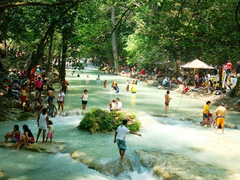
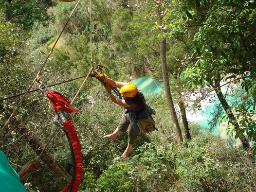
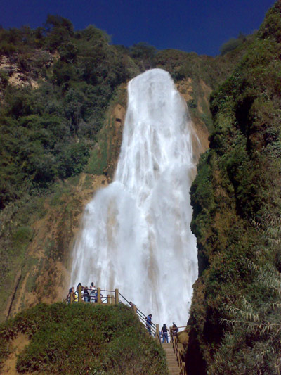
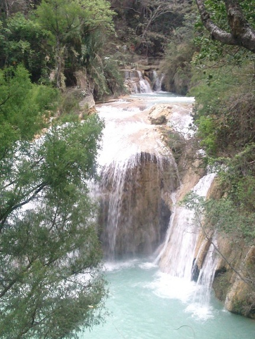
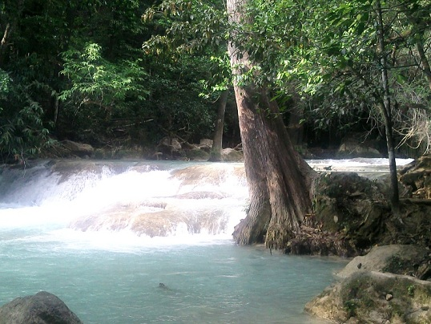
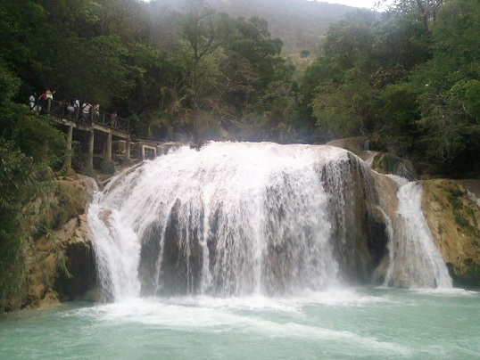

Cadena de cascadas que se forman por el cauce del rio San Vicente, con una cascada con 70 m de altura, formando albercas naturales de aguas de intenso color azul turquesa, con una gran vegetación, formando una cortina arbórea y paisajes.
Partiendo de Las Rosas
Diríjase hacia el sur – gire a la izquierda – siga en ese camino hasta girar en el primer desvío a la derecha. Hasta llegar a las hermosas Cascadas el Chiflón.
Desde San Cristóbal de las Casas:
Tomar en dirección de Comitán de Domínguez vía Villa las Rosas (122Kilómetro) y después hacia el municipio de Tzimol (24 kms).
Desde Tuxtla Gutiérrez:
Tomar en dirección de Comitán de Domínguez vía Pujitlic (146 kilómetro) y después hacia el municipio de Tzimol. (son 21 km desde Pujiltic).
Dentro de este encantador centro Ecoturistico usted puede realizar actividades como el senderismo / Trekking. Contemplar la maravillosa cascada, la contemplación del paisaje de su flora y fauna, y sobre todo el Ecoturismo.






posicione el mouse sobre las imágenes